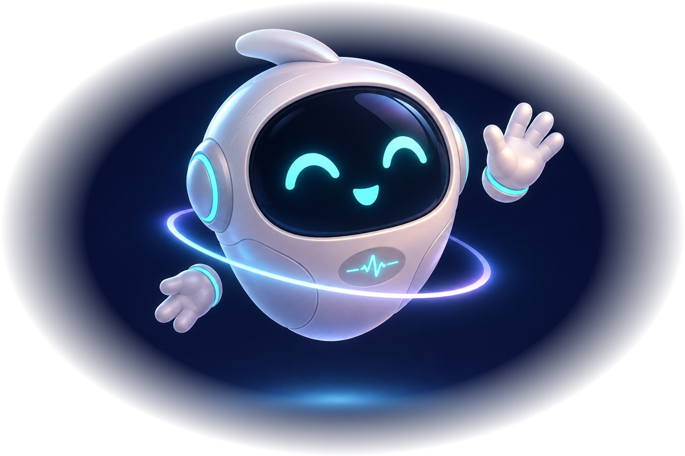
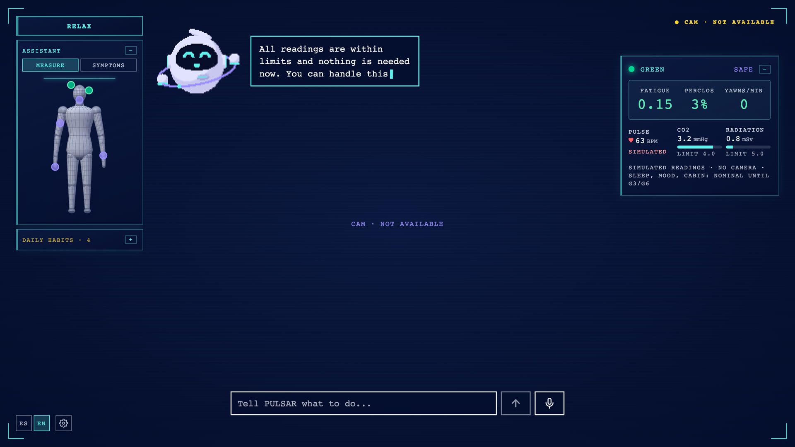
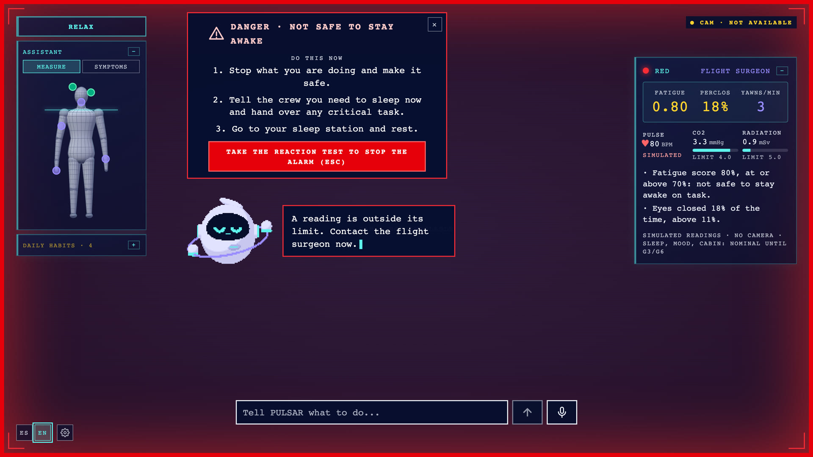

Far from Earth, messages take longer and a flight surgeon is not always on the line. The crew has to notice on their own that something is changing.
Months with the same people, shifting schedules, little sleep.
The farther out, the more medical autonomy the crew needs.
Cabin air is one more system to watch.

Eye openness, blinks, yawns, arm movement, in the browser.
Small model trained on public drowsiness datasets.
Explicit thresholds, each with a source or a declared assumption. Most severe status wins.
Two sentences from the verdict. Off-script? A fixed sentence replaces it.
Speech in, speech out, on the same laptop.

Fatigue 0.80 ≥ 0.70 and eyes closed 18% > 11%. The panel shows why, reading by reading.
Status RED: contact the flight surgeon. Three concrete steps, out loud.
The alarm stops only by passing the reaction test or by choosing to rest.
3 classes, leave-one-subject-out on RLDD. AUC 0.62. An indicative signal, not a detector.
Spearman over 36 DROZY tests, fatigue score vs reaction time. Nothing trained on DROZY.
Median, offline: speech-to-text, rules, Gemma 4 E4B and speech, on an Apple Silicon laptop.
The other six are declared assumptions, listed publicly.
HRP names drive the body map and every rule's risk. A contract check fails the build if any value lacks a source or a declared assumption. Not a medical device: no SANS detection, no camera-based HRV.
A station, a lunar base or a Mars transit: an auditable companion that keeps working when Earth is minutes away.
Night drivers, night shifts, remote bases. Not validated for these uses: each would need its own trials.
Source the remaining thresholds, chart measured indicators over time, bring Inspiration4 reference ranges into the guides.